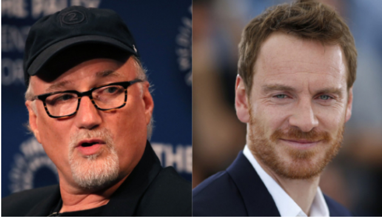

Como ya es costumbre, iniciado el año Netflix ha publicado un espídico tráiler donde pasa revista de los grandes estrenos que llegarán a la plataforma en los próximos meses. Dicho anuncio da comienzo hábilmente con una sucesión de planos de los films que más han dado que hablar en Netflix a lo largo de 2022 (de Pinocho de Guillermo del Toro a Puñales por la espalda: El misterio de Glass Onion), de cara a revalidar la confianza de los suscriptores en un calendario que se antoja muy seductor. Está por ahí Rebel Moon de Zack Snyder, una aventura medieval con Millie Bobby Brown, Tyler Rake 2 o Heart of Stone con Gal Gadot, destacando entre todos sin embargo The Killer. Se trata de lo nuevo de David Fincher, un cineasta al que siempre hay que estar atento. Luego de estrenar Mank en Netflix, quien firmara La red social extendió su contrato con la plataforma, y el resultado es un film de intriga que protagoniza Michael Fassbender. No vemos mucho de él en el avance de Netflix aparte de planos de Fassbender en moto o disfrazado, guiados por una voz en off que dice “no improvises, no confíes en nadie”. Pero The Killer lleva tiempo gestándose, y una vez Netflix ha programado su fecha de estreno para el 10 de noviembre (a la espera de que pueda colarse en la carrera correspondiente al Oscar) es buen momento para poner en común todo lo que sabemos de la película.
Fincher empezó a darle vueltas a adaptar los cómics de The Killer en torno a 2007, al poco de estrenar Zodiac con gran éxito crítico. Se hallaba en la cúspide de su prestigio como autor, y esta obra parecía ajustarse a sus inquietudes creativas. No tardaron en agilizarse trámites: su colega Brad Pitt se comprometió a producir The Killer a través de su sello Plan B Entertainment y Paramount Pictures accedió a distribuirla, pero entonces el tiempo empezó a pasar sin que el proyecto se concretara. Fincher encadenó El curioso caso de Benjamin Button con La red social tras Zodiac, y The Killer fue perdiendo prioridad en su agenda pese a tener ya un guionista asociado: Alessandro Camon. En algún punto de los años siguientes Fincher entró en contacto con Netflix, algo que desde una colaboración inicial dentro de House of Cards cambiaría su carrera de arriba abajo. De este modo, el director volvió a asociarse con la plataforma de streaming para Mindhunter (donde dirigiría, como ocurrió en House of Cards, el piloto) y Love, Death + Robots, antología que la compañía accedió a financiarle tanto a él como a Tim Miller para producir diversos cortos de animación para adultos. En el seno de la última temporada, de hecho, Fincher hizo su debut como director de animación en Mal viaje.